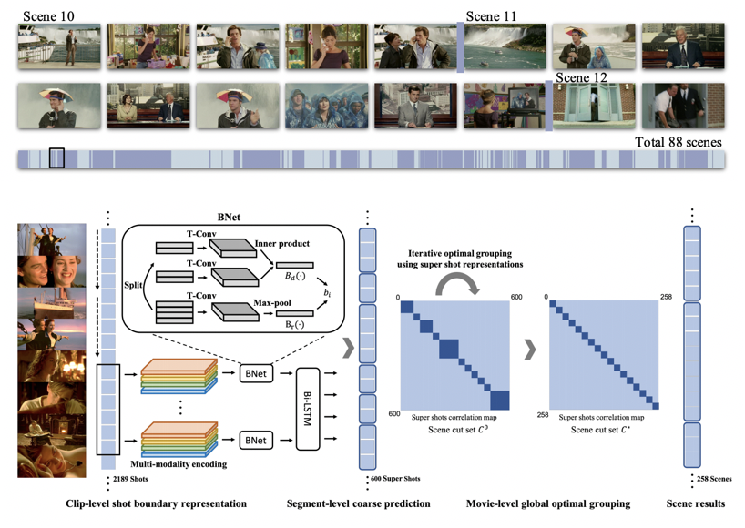

{kind=link}
Teaching Experiences
Patents
Anyi Rao is an Assistant Professor
at the Hong Kong University of Science and Technology (HKUST).
He leads the Multimedia Creativity Lab (MMLab@HKUST).
He is the Associate Director of
HKUST Media Intelligence Research Center.
He studies human AI and agentic AI,
focusing on the creation, editing and understandingand of art, media and film,
aiming to build human-AI collaborative intelligence
and unleash human creativity and productivity.
His works include
ControlNet,
AnimateDiff,
MovieNet,
Virtual Studio,
and IC-Light,
with a Marr Prize (ICCV best paper award).
These works have been widely used in industry, including Amazon Prime Video, Netflix, Tencent, and more.
He was a Postdoctoral Scholar at Stanford with Maneesh Agrawala. He received the Ph.D. at MMLab, Chinese University of Hong Kong with Dahua Lin and Bolei Zhou. He has research experiences at Meta Reality Lab, Vector Institute, University of Toronto, Hong Kong University. He organized the SIGGRAPH/CVPR/ICCV/ECCV Creative Visual Content Workshop and the SIGGRAPH Generative Models Course, curated 2025 Hong Kong HKUST AI Film Festival and 2023 Paris ShortFest AI Film Festival. He also serves as a co-chair of MMSys26, UIST25, VINCI25, CVM25, UIST24 and area chair/TPC of CVPR26, ICLR26, SIGGRAPH Asia26, UIST26, SIGGRAPH Asia25.
He has hosted the Brown Media Innovation Research Fund, Amazon Video Research Fund, been featured in Forbes 30 Under 30 Asia 2025 List, and won the Rising Star Award at the World Artificial Intelligence Conference 2024. He gave keynote at the Golden Rooster Film Festival, the Shanghai Television Magnolia Festival, was featured by Shanghai TV Financial Channel, Hong Kong Cable Television.
Actively looking for highly motivated students to join the group. See openings for more details. Please fill out this 2026 form for 2026 intake and send an email to me if you are interested in.
|
CineVision: An Interactive Pre-visualization Storyboard System for Director–Cinematographer Collaboration |
|
VideoRepainter: Keyframe-Guided Creative Video Inpainting |
|
IC-Light: Scaling In-the-Wild Training for Diffusion-based Illumination Harmonization and Editing by Imposing Consistent Light Transport |
|
ScriptViz: A Visualization Tool to Aid Scriptwriting based on a Large Movie Database
|
|
Cinematic Behavior Transfer via NeRF-based Differentiable Filming
|
|
AnimateDiff: Animate Your Personalized Text-to-Image Diffusion Models without Specific Tuning |
|
SparseCtrl: Adding Sparse Controls to Text-to-Video Diffusion Models
|
|
ControlNet: Adding Conditional Control to Text-to-Image Diffusion Models |
|
Automated Conversion of Music Videos into Lyric Videos |
|
Dynamic Storyboard Generation in an Engine-based Virtual Environments for Video Production |
|
Shoot360: Normal View Video Creation from City Panorama Footage |
|
Temporal and Contextual Transformer for Multi-Camera Editing of TV Shows
|
|
|
A Coarse-to-Fine Framework for Automatic Video Unscreen |
|
BungeeNeRF: Progressive Neural Radiance Field for Extreme Multi-scale Scene Rendering
|
|
 |
A Local-to-Global Approach to Multi-modal Movie Scene Segmentation |
|
A Unified Framework for Shot Type Classification Based on Subject Centric Lens
|
|
|
MovieNet: A Holistic Dataset for Movie Understanding
|
| 2025 | |
| 2025 | |
| 2025 | |
| 2025 | |
| 2024 | |
| 2024 | |
| 2024 | |
| 2023 | |
| 2023 | |
| 2023 |
| 2025 | |
| 2024 | |
| 2023 | |
| 2022 | |
| 2021 | |
| 2021 | |
| 2020 | |
| 2018 | |
| 2017 | |
| 2017 | |
| 2015 | |
| 2013 | |
| 2015 | |
| 2016 | |
| 2015 | |
| 2016 | |
| 2017 | |
| 2016 | |
| 2017 | |
| 2016 | |
| 2016 | |
| 2014 |
|
|
|
|
|
|
|
|
Undergrad His GPA ranked No.1 in each semester during his undergraduate studies at Nanjing University
with an overall GPA: 3.96/4.00 and Rank: 1/183.
He finished major curricula in 2 years and learned a bunch of online courses.
[Whole] Robust Training with Word-level Adversity for NLP Automatic Music Accompaniment Using Probabilistic Machine Learning Real-time 3D Surface Reconstruction Using Lidar (Light Detection And Ranging)
Click to expand
Undergrad Academic
Undergrad Research Beginning
Sept. 2017 - April. 2018 Advanced Integration and Mining Lab (AIM), Eugene, OR, United States of America
Advisor: Prof. Dejing Dou (Director, Head of Baidu Big Data Lab) and Prof. Daniel Lowd
[The Register]
Jul. 2017 - Aug. 2017 The University of Hong Kong, Hong Kong S.A.R.
Advisor: Prof. Francis Lau (Associate Dean)
[Arxiv]
Aug. 2016 - Sept. 2017 Visual Sensing and Graphics Lab (VISG Lab), Nanjing University
Supervisor: Prof. Sidan Du (Director)
[Report]
[Video]
Undergrad Course Projects
Computer Vision:
3D Human Poses Estimation from a Single Image
[Presentation]
Convex Optimization:
Road Car Flow Prediction
[Report]
Probability and Stochastic Process:
Monte Carlo for Multidimensional Integrals
[Report]
Microcomputers and Interface Techniques: x86 Assembly Language Programming [Report]
Signal Processing: Single-Photon Detector Design
[Report]
[Presentation]
Volunteer Experiences Co-Founder of a Children Care Volunteer Program
Sep. 2015 - Dec. 2015 Vice President of a Young Volunteers Association at Nanjing University
Jun. 2015 - Jun. 2016 Campus Ambassador of Huawei
Aug. 2017 - Dec. 2017 Student Volunteer of International Conference on Computer Vision (ICCV)
Dec. 2019
Click to expand
Co-founded a psychological consulting program to promote left-behind children's growth and education.
Volunteered to teach left-behind children Math and English in
a junior high school located in the remote, underdeveloped Xiushui county.
Recognized as a key team leader in the successful Warm One Hundred Campaign, which raised money for
left-behind children. Our group received an excellence award from the China Foundation for Poverty Alleviation.
Organized and participated in over 100 out-of-school and 20 in-school activities covering over 1000 volunteers.
Our association received a volunteer association excellence award.